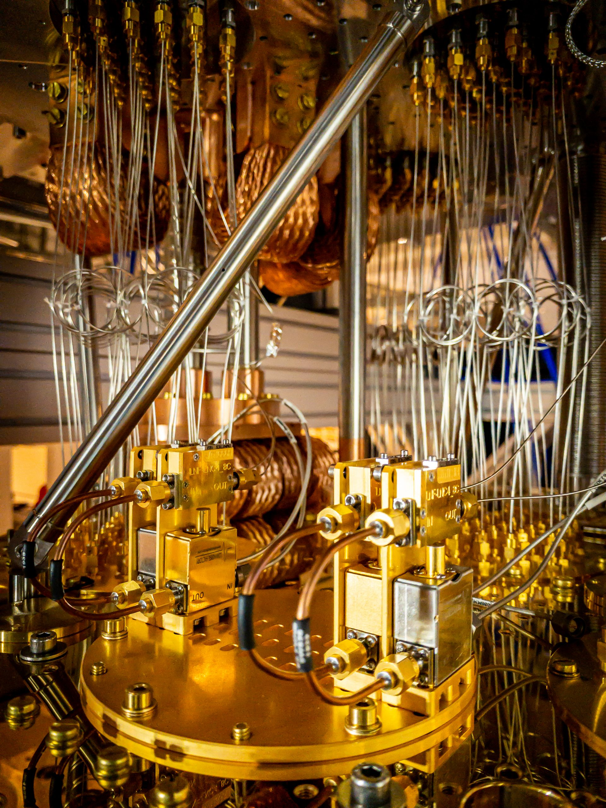

SEEKER
Find the blind spot.Reorders events, probes forbidden fallback, and turns a complex failure into a case we can reproduce.

Intelligence evolves.
Trust must endure.
Two AI research roles explore migration failures, propose repairs, and build a memory of what survives verification.
The world will change how it proves identity.
Trust needs a way through.
A signature can still be genuine after its key loses power. A failed upgrade can reopen an old door. EVORPH studies these moments of transition.
Our mission: help digital identity, authority, and ownership survive the shift to post-quantum cryptography.
Why this matters nowOne searches for the failure.
One works on the repair.
Every advance must earn its place.
Reorders events, probes forbidden fallback, and turns a complex failure into a case we can reproduce.
Proposes a bounded repair, keeps legitimate access working, and carries accepted methods into the next round.
A fixed verification kernel decides. Algorithms, permission rules, and acceptance criteria stay outside the agents’ control.
How we build itPublic exchange and experiment records.
Establishing a read-only connection to the public archive. Browsing never starts an experiment.
Preview sample recordsAuthored interface fixtures. No agents, experiments or model calls produced these records.
No public records to display.
Loading the archive…
Select a published record to follow a question, its tests and what happened next.
No record selected
Public statements are distinct from program observations. Internal model reasoning is not published here. Explore the first chapter
Evolution means inherited methods
with inspectable evidence.
Progress is never assumed.
The current handler trusts the signature. It misses the fact that the signer’s authority has ended.
A delayed request exposes the gap. Its sequence and origin become part of a traceable research record.
An accepted repair gains a parent, a test, and a history. The challenge becomes a regression the next applicable version must still pass.
Fixed local cryptographic checks.
No AI-generated repairs in this record.
What we are. Why the transition matters. How two AI roles turn a challenge into a testable result.
Read the EVORPH docsA contribution is a challenge that changes the research: a new failure, a sharper reproduction, or an independently checked result.
How contributions are recognized